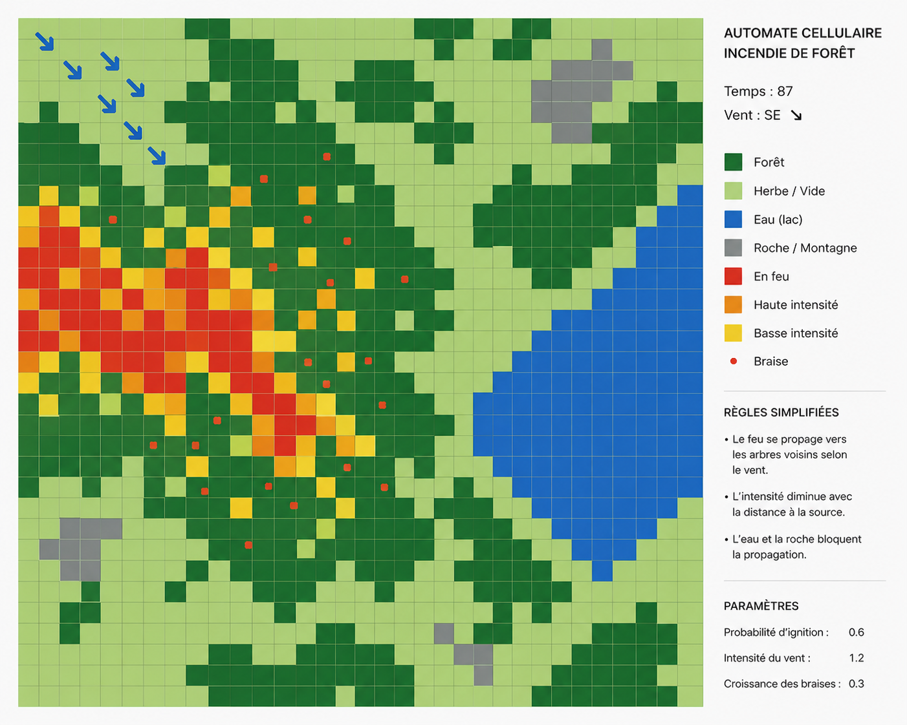
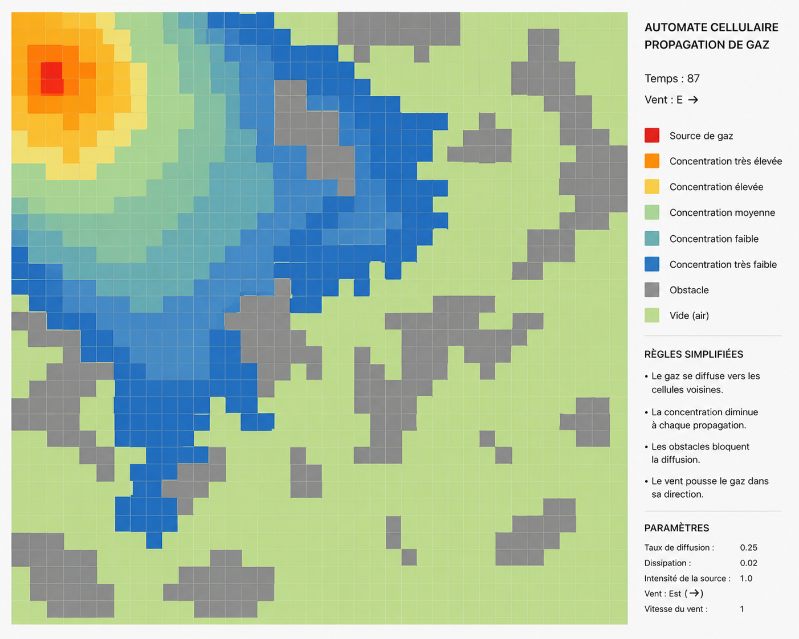

Quelques règles pour
comprendre la nature
Les phénomènes complexes qui nous entourent naissent souvent de règles simples. Comment un feu se propage, comment les cellules vivantes se reproduisent, comment un gaz se diffuse — tout cela peut être simulé par des automates cellulaires.
Explorez ce webdocumentaire interactif pour découvrir comment la complexité émerge de la simplicité.
Qu'est-ce qu'un automate cellulaire ?
Un automate cellulaire est un système mathématique très simple : une grille de cellules, chaque cellule a un état, et à chaque pas de temps, les cellules changent d'état selon une règle locale.
Les trois éléments clés
Un automate cellulaire repose sur trois principes fondamentaux :
🔲 La Grille
Un espace régulier où chaque cellule a une position définie et un état (vivant / mort, allumé / éteint).
⚙️ La Règle Locale
Chaque cellule consulte ses voisins et applique une règle déterministe pour définir son prochain état.
⏱️ L'Itération
À chaque génération, toutes les cellules se mettent à jour simultanément, créant une dynamique globale.
💡 Propriété remarquable : Les automates cellulaires peuvent simuler des phénomènes réels — la croissance de cristaux, la propagation de feux de forêt, l'évolution d'écosystèmes — tout en restant mathématiquement parfaits.
Exemples naturels
Les automates cellulaires ne sont pas qu'un outil mathématique — la nature les utilise :
- Coquillages : Les motifs sur les coquilles de cônes suivent des règles d'automates cellulaires.
- Écosystèmes : La distribution des animaux et des plantes émerge de règles de proximité locales.
- Cristallographie : La formation de cristaux de flocons de neige suit des dynamiques similaires.
L'automate cellulaire par excellence
En 1970, le mathématicien John Conway a créé le « Jeu de la Vie », un automate cellulaire qui simule l'évolution de populations. Malgré ses règles élémentaires, il produit des comportements étonnamment complexes.
Les quatre règles
À chaque génération, ces quatre règles s'appliquent simultanément à chaque cellule :
Sous-population
Une cellule vivante avec moins de 2 voisins meurt d'isolement.
Survie
Une cellule vivante avec 2 ou 3 voisins survit à la prochaine génération.
Sur-population
Une cellule vivante avec plus de 3 voisins meurt d'étouffement.
Naissance
Une cellule morte avec exactement 3 voisins devient vivante.
🔬 Complexité émergente : Ces quatre règles ultra-simples donnent naissance à des formes remarquables : des structures stables, des oscillateurs, des créatures qui se déplacent à travers la grille.
Explorer le Jeu de la Vie
Interagissez directement avec la grille : dessinez, lancez la simulation, chargez des motifs et observez l'évolution.
Cliquez ou glissez un motif vers la grille pour l’ajouter.
Simuler un incendie avec des automates
Pourquoi cette simulation est utile
La simulation de feu de forêt avec un automate cellulaire est très intéressante car elle possède une application réelle, ces simulations sont utilisées par des pompiers pour savoir rapidement le nombre d'hectares de forêt perdus le temps qu’ils arrivent sur les lieux, et où il serait plus bénéfique de commencer à éteindre l’incendie.
Dans cette simulation, les cellules ont 4 états :
- Terrain non combustible : rochers, lacs et zones impossibles à enflammer.
- Terrain inflammable : arbres, herbe et végétation qui peuvent brûler.
- Terrain en feu : une zone inflammable qui brûle à l'instant présent.
- Terrain en cendre : une zone déjà brûlée qui ne se réenflamme plus.
Le changement d’état est simple : une case s’enflamme quand un certain nombre de cases autour d’elle brûlent. Ce seuil dépend de facteurs comme l’humidité, la force du vent, et d’autres conditions environnementales. Ensuite, la case devient cendre après avoir brûlé pendant une étape.
A quoi ça ressemble
Une grille discrète montre l’évolution du feu et sa propagation vers les arbres voisins.

🔬 Applications réelles : Ces modèles sont utilisés par les agences de gestion des forêts pour prédire la propagation des feux, évaluer les zones à risque et optimiser les stratégies d'évacuation.
Comment un gaz se répand dans l'air
Pourquoi cette simulation est utile
La simulation de la propagation d’un gaz est la plus complexe des simulations dont nous allons parler, principalement parce qu’elle dépend du gaz qui est simulé, mais aussi parce qu’un gaz se répartit de manière uniforme dans l’air.
Les cellules peuvent être divisées en trois états :
- Cellules non propagatrices : les zones où le gaz ne peut pas se répandre, comme les murs.
- Cellules sans gaz : les zones dans lesquelles le gaz ne s’est pas encore répandu.
- Cellules contaminées : les zones dans lesquelles le gaz s’est répandu, avec une couleur qui varie selon le niveau de concentration.
Enfin, pour le changement d’état, une cellule devient contaminée par le gaz quand il y a une cellule dans laquelle le gaz s’est répandu à côté, cependant la cellule depuis laquelle le gaz se répand perd une partie de son gaz, qui se transfert dans la cellule nouvellement contaminée.
A quoi ça ressemble
Le gaz se répartit progressivement dans l’espace, en contournant les obstacles.

🔬 Connexion avec la physique : Ce modèle simple est une approximation discrète de l'équation de diffusion de Fourier. Il démontre comment des lois physiques complexes émergent de la mécanique aléatoire.
Au-delà des frontières
Les automates cellulaires ne sont qu'un point de départ. Ils montrent que la complexité naît de la simplicité — un principe qui s'étend bien au-delà de la grille.
Directions futures
🧬 Biologie
Modéliser la croissance des tissus, la réplication cellulaire, l'évolution des populations.
🌍 Écologie
Prédire les migrations d'animaux, la compétition entre espèces, l'impact du climat.
🏙️ Urbanisme
Modéliser le trafic, la propagation des épidémies, la croissance urbaine.
💻 Intelligence Artificielle
Utiliser les automates comme base pour des systèmes multi-agents autonomes.
Ressources et lectures
- A New Kind of Science de Stephen Wolfram — Une exploration exhaustive des automates cellulaires.
- Site officiel Life Lexicon — Catalogue complet des formes du Jeu de la Vie.
- Projets d'automates sur GitHub — Implémentations en divers langages.